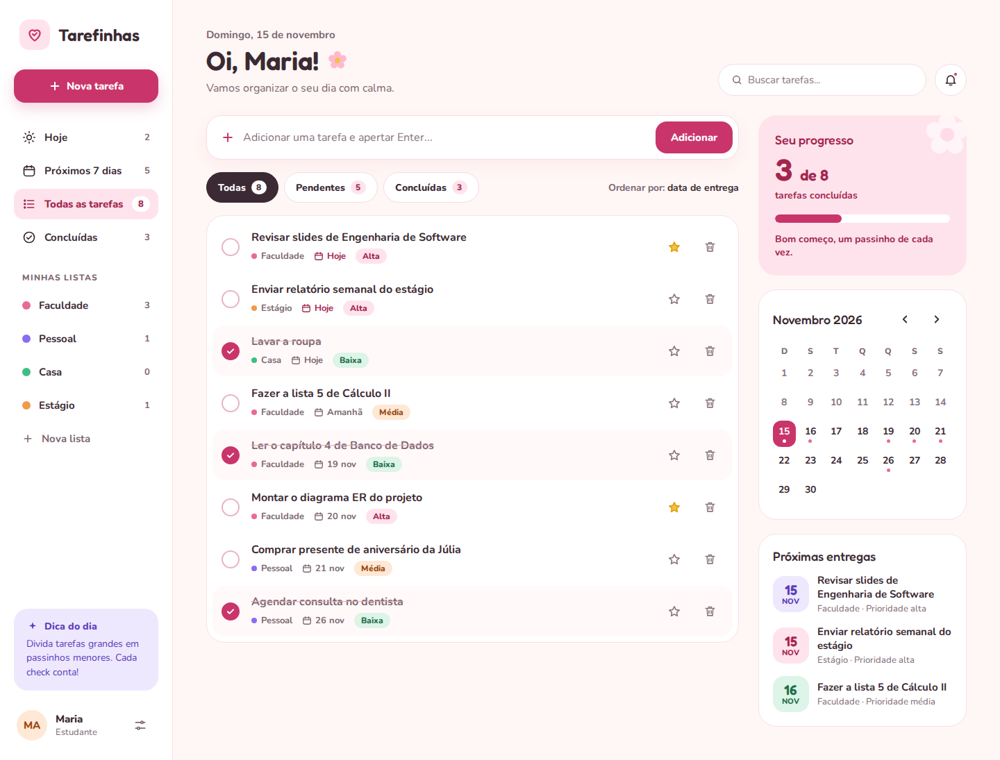

Um app de tarefas com CRUDs completos e consultas SQL no PostgreSQL.
[Seu nome] · [Disciplina] · [Professor(a)]

Frontend em TypeScript, dividido em componentes reutilizáveis. Os services falam com a API e as rotas trocam de tela sem recarregar a página.
Backend em camadas (Controller → Service → Repository). O Spring Data JPA faz os CRUDs e deixa escrever SQL nativo com @Query. Validação e erros prontos.
Banco relacional, gratuito e muito usado. Garante as regras com chaves, CHECK e UNIQUE e tem recursos ótimos para relatórios, como COUNT FILTER e ILIKE.
Cada parte roda num container. Com um comando (docker compose up) o banco, a API e o site sobem iguais em qualquer computador.
+ Flyway (cria as tabelas a partir de arquivos .sql) e BCrypt (guarda a senha embaralhada).
A pessoa abre localhost:4200
Mostra as telas e chama /api/...
Regras, validação e consultas
Guarda os dados (4 tabelas)
usuario_id: cada pessoa só vê os próprios dados.localhost:8081), e para testar a API, o Swagger.-- V1__criar_tabelas.sql
CREATE TABLE tarefas (
id BIGSERIAL PRIMARY KEY,
usuario_id BIGINT NOT NULL
⟦REFERENCES usuarios (id) ON DELETE CASCADE⟧,
lista_id BIGINT
⟦REFERENCES listas (id) ON DELETE SET NULL⟧,
titulo VARCHAR(200) NOT NULL,
descricao TEXT,
data_entrega DATE,
prioridade VARCHAR(10) NOT NULL DEFAULT 'MEDIA'
⟦CHECK (prioridade IN ('BAIXA', 'MEDIA', 'ALTA'))⟧,
concluida BOOLEAN NOT NULL DEFAULT FALSE,
criado_em TIMESTAMP NOT NULL DEFAULT NOW()
);
CREATE INDEX idx_tarefas_usuario ON tarefas (usuario_id);
-- V3__perfil_do_usuario.sql
⟦ALTER TABLE usuarios⟧
ADD COLUMN papel VARCHAR(60) NOT NULL DEFAULT 'Estudante';
Flyway roda os arquivos V1, V2, V3 em ordem quando a API liga — e anota quais já rodaram.
Create, Read, Update e Delete: criar, ler, atualizar e apagar — em todas as entidades do sistema.
| Create · INSERT | Read · SELECT | Update · UPDATE | Delete · DELETE | |
|---|---|---|---|---|
| Usuários | POST/api/auth/cadastro |
GET/api/usuarios/mePOST /api/auth/login |
PUT/api/usuarios/me |
DELETE/api/usuarios/me |
| Listas | POST/api/listas |
GET/api/listas |
PUT/api/listas/{id} |
DELETE/api/listas/{id} |
| Tarefas | POST/api/tarefas |
GET/api/tarefasGET /api/tarefas/{id} |
PUT/api/tarefas/{id}PATCH …/concluir …/favoritar |
DELETE/api/tarefas/{id} |
| Subtarefas | Salvas junto com a tarefa (no POST e no PUT). Tirou uma da lista → o JPA faz o DELETE. Apagou a tarefa → o banco apaga as subtarefas (ON DELETE CASCADE). |
|||
Recebe PATCH /api/tarefas/6/concluir (o "garçom").
Busca a tarefa da usuária logada e inverte concluida (o "cozinheiro").
findByIdAndUsuarioId() e save() — o Spring Data gera o SQL (a "despensa").
Executa o SQL e devolve o resultado, que volta como JSON.
-- Create (POST /api/tarefas) INSERT INTO tarefas (concluida, criado_em, data_entrega, descricao, favorita, lembrete, lista_id, prioridade, titulo, usuario_id) VALUES (?, ?, ?, ?, ?, ?, ?, ?, ?, ?) -- Read (só a tarefa da pessoa logada) SELECT ... FROM tarefas t1_0 WHERE t1_0.id = ? AND t1_0.usuario_id = ? -- Update (PATCH /api/tarefas/6/concluir) UPDATE tarefas SET concluida = ?, ... WHERE id = ? -- Delete (DELETE /api/tarefas/6) DELETE FROM tarefas WHERE id = ?
Os ? são parâmetros: o valor nunca é colado no texto do SQL, o que evita SQL injection.
6 consultas escritas à mão (SQL nativo do PostgreSQL) que alimentam a lista, os filtros, o painel, o calendário e as notificações.
SELECT t.*
FROM tarefas t
WHERE t.usuario_id = :usuarioId
AND (⟦CAST(:listaId AS BIGINT) IS NULL⟧
OR t.lista_id = CAST(:listaId AS BIGINT))
AND (CAST(:busca AS TEXT) IS NULL
OR t.titulo ⟦ILIKE '%' || :busca || '%'⟧)
AND (CAST(:data AS DATE) IS NULL
OR t.data_entrega = CAST(:data AS DATE))
AND ( :visao = 'todas'
OR (:visao = 'hoje'
AND t.data_entrega = ⟦CURRENT_DATE⟧)
OR (:visao = 'semana'
AND t.data_entrega ⟦BETWEEN CURRENT_DATE
AND CURRENT_DATE + 7⟧)
OR (:visao = 'concluidas'
AND t.concluida = TRUE) )
CAST(:x) IS NULL OR ... → se o filtro não foi enviado, a condição é ignorada.ILIKE '%texto%' → "contém", sem diferenciar maiúscula de minúscula.CURRENT_DATE + 7 e BETWEEN → os próximos 7 dias.| titulo | prioridade |
|---|---|
| Montar o diagrama ER do projeto | ALTA |
ORDER BY
⟦CASE WHEN :ordem = 'prioridade' THEN
CASE t.prioridade WHEN 'ALTA' THEN 1
WHEN 'MEDIA' THEN 2
ELSE 3 END
END⟧,
CASE WHEN :ordem = 'titulo'
THEN LOWER(t.titulo) END,
CASE WHEN :ordem = 'recentes'
THEN t.criado_em END ⟦DESC⟧,
t.data_entrega ⟦NULLS LAST⟧,
t.id
ORDER BY só "vale" quando a ordem escolhida bate. Nas outras, o CASE dá NULL e não muda nada.CASE transforma ALTA/MEDIA/BAIXA em 1/2/3.DESC → do maior para o menor (mais recentes primeiro).NULLS LAST → tarefas sem data vão para o fim.| titulo | prioridade |
|---|---|
| Revisar slides de Engenharia de Software | ALTA |
| Enviar relatório semanal do estágio | ALTA |
| Montar o diagrama ER do projeto | ALTA |
| Fazer a lista 5 de Cálculo II | MEDIA |
| … e depois as de prioridade BAIXA |
SELECT l.id,
l.nome,
l.cor,
⟦COUNT(t.id) FILTER (WHERE t.concluida = FALSE)⟧
AS pendentes
FROM listas l
⟦LEFT JOIN⟧ tarefas t ON t.lista_id = l.id
WHERE l.usuario_id = :usuarioId
⟦GROUP BY l.id, l.nome, l.cor⟧
ORDER BY l.id
LEFT JOIN → a lista aparece mesmo sem nenhuma tarefa (com 0). Com INNER JOIN, a lista "Casa" sumiria.GROUP BY → junta as linhas de cada lista para poder contar.COUNT(...) FILTER (WHERE ...) → conta só as não concluídas.| nome | pendentes |
|---|---|
| Faculdade | 3 |
| Pessoal | 1 |
| Casa | 0 |
| Estágio | 1 |
SELECT COUNT(*) AS total,
⟦COUNT(*) FILTER (WHERE concluida = TRUE)⟧
AS concluidas,
COUNT(*) FILTER (WHERE concluida = FALSE)
AS pendentes,
COUNT(*) FILTER (WHERE concluida = FALSE
AND data_entrega = CURRENT_DATE)
AS hoje,
COUNT(*) FILTER (WHERE concluida = FALSE
AND data_entrega BETWEEN CURRENT_DATE
AND CURRENT_DATE + 7)
AS semana
FROM tarefas
WHERE usuario_id = :usuarioId
FILTER conta só as linhas que passam na sua condição.COUNT) com filtro — recurso do PostgreSQL.| total | concluidas | pendentes | hoje | semana |
|---|---|---|---|---|
| 8 | 3 | 5 | 2 | 5 |
SELECT ⟦DISTINCT⟧
CAST(⟦EXTRACT(DAY FROM data_entrega)⟧
AS INTEGER) AS dia
FROM tarefas
WHERE usuario_id = :usuarioId
AND data_entrega >= :inicio -- dia 1 do mês
AND data_entrega < :fim -- dia 1 do mês seguinte
ORDER BY dia
EXTRACT(DAY FROM data) → pega só o número do dia (19 de 2026-11-19).DISTINCT → tira os repetidos: duas tarefas no dia 19 viram um 19 só.>= início AND < fim → todas as datas do mês, sem precisar saber se ele tem 30 ou 31 dias.| dia |
|---|
| 15 · 16 · 19 · 20 · 21 · 26 |
SELECT t.id,
t.titulo,
⟦TO_CHAR(t.data_entrega, 'YYYY-MM-DD')⟧
AS "dataEntrega",
t.prioridade,
l.nome AS "listaNome"
FROM tarefas t
⟦LEFT JOIN listas l ON l.id = t.lista_id⟧
WHERE t.usuario_id = :usuarioId
AND t.concluida = FALSE
AND t.data_entrega >= CURRENT_DATE
ORDER BY t.data_entrega, t.id
⟦LIMIT 3⟧
LEFT JOIN listas → traz o nome da lista junto (ou nulo, se a tarefa não tiver lista).ORDER BY data_entrega + LIMIT 3 → só as 3 que vencem primeiro.TO_CHAR → formata a data como texto.| titulo | entrega | listaNome |
|---|---|---|
| Revisar slides de Engenharia de Software | hoje | Faculdade |
| Enviar relatório semanal do estágio | hoje | Estágio |
| Fazer a lista 5 de Cálculo II | amanhã | Faculdade |
SELECT t.id,
t.titulo,
⟦CASE
WHEN t.data_entrega < CURRENT_DATE
THEN 'ATRASADA'
WHEN t.data_entrega = CURRENT_DATE
THEN 'HOJE'
ELSE 'LEMBRETE'
END AS tipo⟧
FROM tarefas t
WHERE t.usuario_id = :usuarioId
AND t.concluida = FALSE
AND ( t.data_entrega <= CURRENT_DATE
⟦OR (t.lembrete = TRUE
AND t.data_entrega = CURRENT_DATE + 1)⟧ )
ORDER BY t.data_entrega, t.id
CASE WHEN ... THEN ... END → é um "se" dentro do SQL: cria a coluna tipo conforme a data.OR junta dois grupos: o que já venceu ou vence hoje, ou o que tem "Me lembrar" ligado e vence amanhã.| titulo | tipo |
|---|---|
| Revisar slides de Engenharia de Software | HOJE |
| Enviar relatório semanal do estágio | HOJE |
| Fazer a lista 5 de Cálculo II | LEMBRETE |
| Método no Repository | SQL gerado |
|---|---|
findByEmailIgnoreCase(email) | SELECT * FROM usuarios WHERE LOWER(email) = LOWER(?) |
existsByEmailIgnoreCase(email) | SELECT COUNT(*) > 0 FROM usuarios WHERE ... |
findByIdAndUsuarioId(id, u) | SELECT * FROM tarefas WHERE id = ? AND usuario_id = ? |
countByUsuarioId(u) | SELECT COUNT(*) FROM listas WHERE usuario_id = ? |
save(objeto) | INSERT (novo) ou UPDATE (já existe) |
delete(objeto) | DELETE FROM ... WHERE id = ? |
usuario_id: ninguém vê a tarefa do outro.:usuarioId, ?) evitam SQL injection.Com spring.jpa.show-sql=true, todo SQL executado aparece no log da API.
localhost:4200
Cadastro e login · criar, editar, concluir e excluir tarefas · listas · filtros, busca, ordenação, calendário e sino.
localhost:8081
As 4 tabelas, a senha em hash e as consultas rodando em "Comando SQL".
localhost:8080/swagger-ui.html
Todos os endpoints do CRUD, testáveis pelo navegador.
JOIN, GROUP BY, COUNT FILTER, CASE, EXTRACT, ILIKE e LIMIT.CHECK, UNIQUE e CASCADE.Perguntas?
Use ← → para passar os slides · F tela cheia